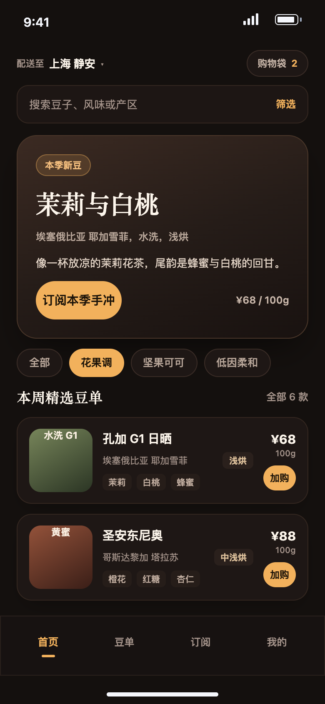

视觉参考图（B / D 输入）
Aura Mobile H5

A · 纯文本基线（无参考图 / 无 Skill）

B · 参考图 + 文本（多模态识图 / 无 Skill）

C · 纯文本 + 开源社区设计 Skill（frontend-design + ui-ux-pro-max + better-colors）

D · 参考图 + 文本 + 社区设计 Skill + Forma 设计系统技能

E · 社区 theme-factory 主题定向迁移（Golden Hour）